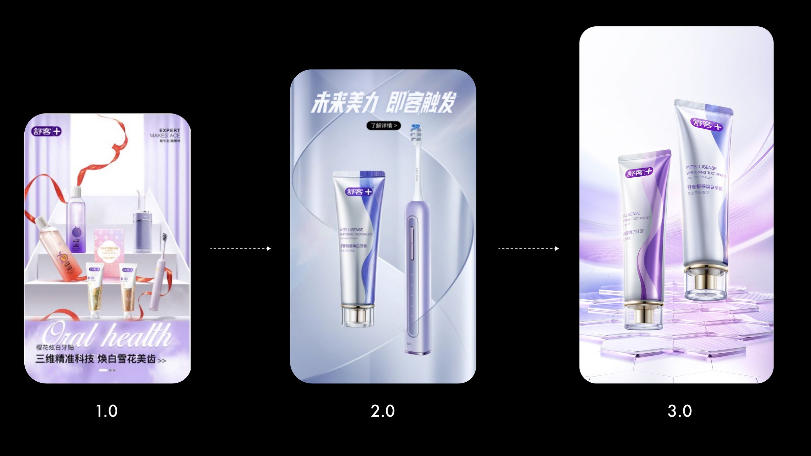
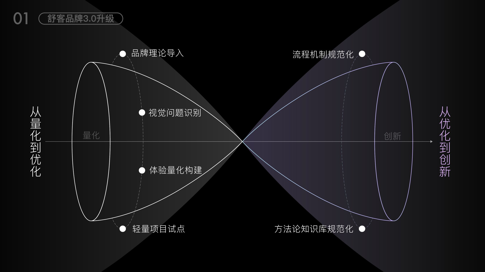
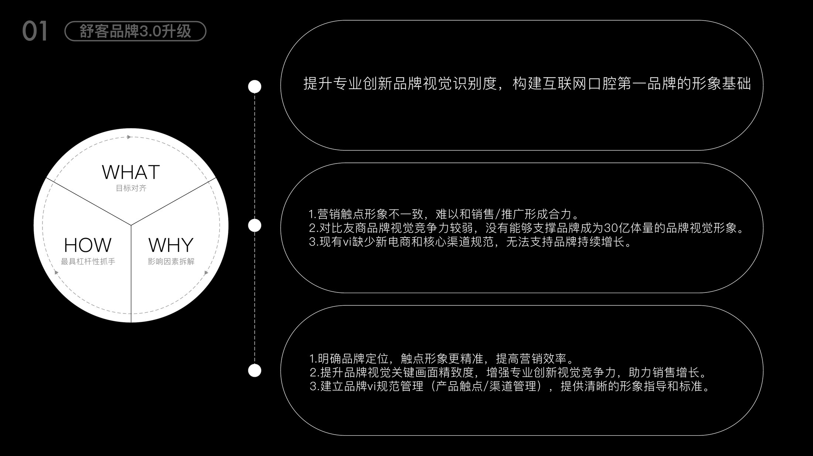
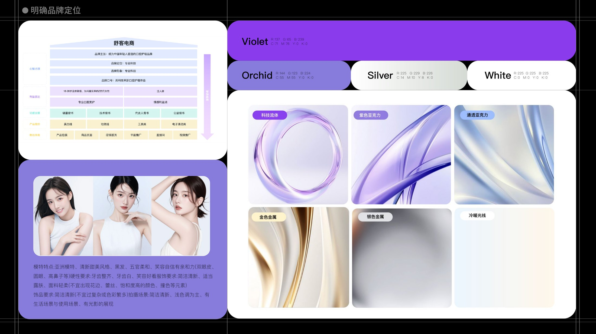
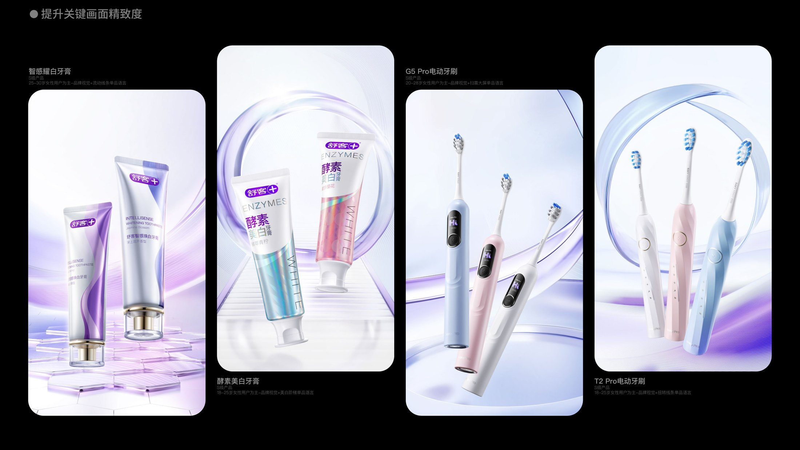
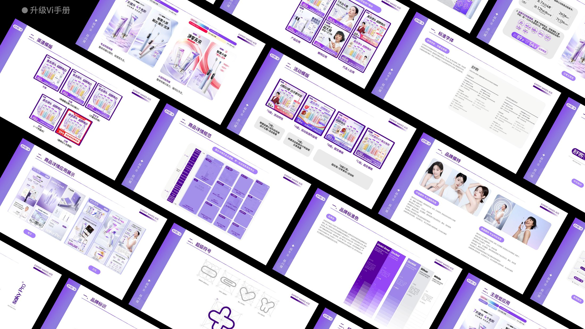
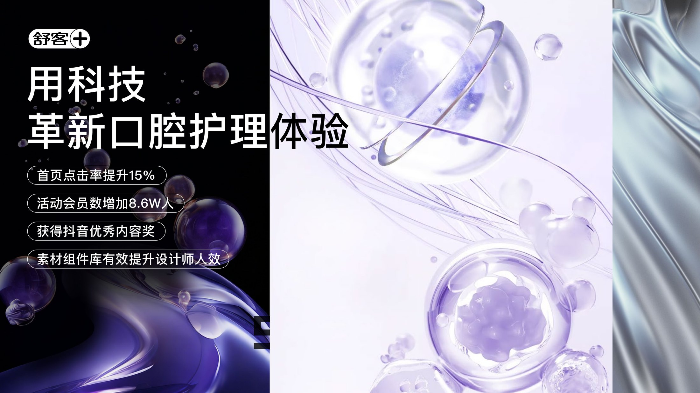

← Work — 01 / 15 · Brand DesignShuke 3.0
Re-articulating Shuke’s brand positioning for e-commerce, rebuilding the product VI, and shipping one series-level visual language across every scenario. 为舒客电商梳理品牌定位，重塑产品 VI 形象，输出全场景系列化视觉设计。


Background
设计背景
Shuke has spent twenty years in oral care, protecting the oral health of 500 million people in China, with 2024 sales passing ¥4.6 billion — and it has become the brand young Chinese consumers reach for first. After signing Xiao Zhan as global brand ambassador, the brand needed a complete online visual upgrade so every touchpoint could speak with one voice.
The diagnosis came down to three things: imagery that is inconsistent across marketing touchpoints and therefore cannot compound with sales and media; a visual language too weak to compete with rival brands at a ¥3 billion scale; and a VI with no rules for the new e-commerce and core channels — nothing in it to support the next stage of growth.
舒客以匠心守护初心，20 年专注口腔健康领域，累计守护 5 亿国人的口腔健康，2024 年销售额突破 46 亿，成为中国年轻人首选的口腔护理品牌。携手肖战成为全球品牌代言人之后，为加强品牌传播形象一致性、提升传播效益，需要一次完整的线上视觉升级。
诊断集中在三点：营销触点形象不一致，难以和销售、推广形成合力；对比友商品牌，视觉竞争力较弱，没有能够支撑 30 亿体量的品牌视觉形象；现有 VI 缺少新电商和核心渠道规范，无法支持品牌持续增长。
Approach
设计思路
Brand Visual Upgrade — the decisions that set the direction. 舒客品牌 3.0 视觉升级 —— 决定方向的几个选择。
-
01
Quantify, then optimise, then innovate从量化到优化，从优化到创新
The path runs brand theory intake → visual problem identification → quantified experience building. Problems get measured before they get redesigned, and innovation comes last. Lightweight pilots validate a direction before it becomes part of the methodology knowledge base.
建立「品牌理论导入 — 视觉问题识别 — 体验量化构建」的路径，先把问题量化，再谈优化，最后才是创新；用轻量项目试点验证方向，再沉淀成方法论知识库。
-
02
Position first — taste comes after先把定位说清楚
The brand positioning was redefined around technology and oral care, then expressed as rules: the Violet / Orchid / Silver / White palette, one typeface system, and a brand-model brief (Asian models, fresh and sweet styling, soft features, light-toned lifestyle scenes).
重新明确「科技 + 口腔护理」的品牌定位，并落成规则：Violet / Orchid / Silver / White 主色板、字体规范，以及品牌模特标准 —— 亚洲模特、清新甜美、五官柔和，画面以浅色调的生活与使用场景为主。
-
03
Craft grades 1.0 → 3.0关键画面精致度 1.0 → 3.0
Key visuals were graded and lifted in stages. Each of the four S-tier products — whitening toothpaste, G5 Pro brush, enzyme toothpaste, T2 Pro brush — got its own single-product language: flowing lines, sweeping large screen, whitening steps, twisted lines.
把关键画面拆成三级标准逐级提升，并为四款 S 级产品各自建立单品视觉语言：智感耀白牙膏（流动线条）、G5 Pro 电动牙刷（扫震大屏）、酵素美白牙膏（美白阶梯）、T2 Pro 电动牙刷（扭转线条）。
-
04
Ship a manual people actually use升级 VI 手册，而不是只出图
Key visuals, the super symbol, product detail templates, campaign templates, typography, models, standard colours and brand marks all became an executable manual — plus an asset component library that measurably raised designer throughput.
把主视觉、超级符号、商品详情、活动模板、字体、品牌模特、标准色与品牌标识全部写进可执行的规范手册，并配套素材组件库，有效提升设计师人效。
Outcome
成果展示






- Result
- Home click-through up 15%; campaign membership up 86,000首页点击率提升 15%；活动会员数增加 8.6W 人
- Recognition
- Douyin Outstanding Content Award; 2024 Shuke “Golden Bull Award” — First Prize (company’s highest honour)获得抖音优秀内容奖；2024 舒客「金牛奖」一等奖（公司最高奖项）
- System
- Upgraded VI manual + asset component library升级 VI 手册 + 素材组件库
Next project / 下一个作品
SAKYPRORAL